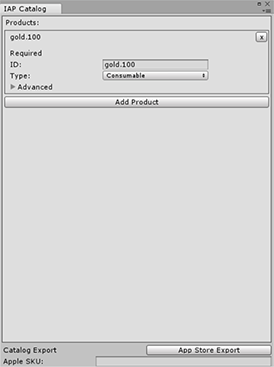

Codeless IAP is the easiest way to integrate in-app purchases in your Unity app. You can use the Unity Editor to set up basic IAP integration using minimal script writing.
Codeless IAP is “codeless” in that you don’t need write code to perform the actual IAP transaction. Once the IAP transaction is completed, you do need to define how users are granted access to their newly purchased product via scripting. However, you may not need to do scripting if, for example, you use a GameObject from the Asset Store with a suitable script for receiving messages that results in the user accumulating in-game wealth.
For further information and the opportunity to give feedback and ask questions, visit the Unity IAP forums.
Using Codeless IAP
Add IAP Buttons to your app and define your products in the IAP Catalog. Then, when players run your game, the Unity Purchasing system is configured based on the products you entered in the catalog. When a player taps or clicks on an IAP Button, it initiates a purchase of the associated product.
Setup
Note: Before following these guides, ensure you have the Unity IAP plugin installed. See documentation on setting up Unity IAP for more information.
Image A: Inspector for a Button with the Codeless IAP component
To add an IAP Button to your Scene, in the Unity Editor menu, select Window > Unity IAP > Create IAP Button.
Select your new IAP Button GameObject in the Scene view and locate the IAP Button (Script) component in the Inspector (see image A, above). Click the IAP Catalog… button to open the IAP Catalog window (see image B, below). Alternatively, in the Unity Editor menu, select Window > Unity IAP > IAP Catalog.

Image B: IAP Catalog window for defining and exporting products
Define a product ID for your IAP product. This ID identifies your product with the app stores. Note that you can override this ID with a unique store-specific ID through the Advanced option.
Choose a product Type (products can be Consumable, Non-consumable, or Subscription).
Select your IAP Button GameObject again in the Scene view, and locate the IAP Button (Script) component in the Inspector (see image A, above) again.
Choose the product from the Product ID pop-up.
Either create your own function that provides purchase fulfillment using scripting or import an Asset to do this. For example, you could import an Asset from the Asset Store with a suitable IAP function (script) for receiving messages that result in the user accumulating in-game wealth.
To do this:
Apply your purchase fulfilment function (script) as a component to a GameObject.
Connect it to the On Purchase Complete (Product) event field in the component’s Inspector (see Image A, above).
Select + on the Inspector and and drag and drop your purchase fulfillment GameObject into the event field as shown in Image A.
Below is an example of a simple on-purchase success function (script). For demonstration purposes, it displays the text “You Got Money!” in the Unity Editor Console Window on success. In your game, credit the user’s wallet with currency or add items to their inventory instead.
using UnityEngine;
using UnityEngine.Purchasing;
public class DemoInventory : MonoBehaviour{
public void Fulfill (Product product){
if (product != null) {
switch (product.definition.id){
case "100.gold.coins":
Debug.Log ("You Got Money!");
Break;
Default:
Debug.Log (
string.Format ("Unrecognized productId \"{0}\"",product.definition.id)
);
Break;
}
}
}
}
Finally, run your game to test the IAP Button.
See the Advanced section, below, for additional information on run time and export-related settings in the the IAP Catalog window.
Advanced
Image C: The IAP Catalog window with the Advanced section folded out
Access the Advanced section by clicking on the arrow icon next to Advanced in the IAP Catalog window.
Advanced fields customize a product with store-specific detail. You can fill out the advanced fields to provide a title and description for your IAP products, override a product’s ID for a particular store, and provide pricing information. After providing this information, you can export the catalog.
Runtime-related functions
To define an IAP, you must input its generic identifier.
The Unity Editor and app stores use this generic identifier by default. However, you can use the Store ID Override section if you need to specify a unique identifier for a specific store.
Export-related functions
When you want to declare or publish a text list of IAP identifiers with an app store, you have to go to that store’s website and enter all the IAP details including the store-specific ID, title, description, price or price tier, and any localized variants to be sold in non-US regions.
For Google Play and the Apple app stores, you can use the Google Configuration or Apple Configuration section respectively to do this from within the Unity Editor.
The Translations section provides localization functionality for Google configuration.
Export
After customizing your products with store-specific details, you can export the entire catalog as a .csv file to upload to Google Play, or as a text file for import through Apple’s Application Loader to the iTunes Store.
None of Unity IAP’s extended features are exposed through the Codeless IAP feature. This includes non-consumable purchase restoration for the Apple App Store (see the sample class below).
However, through Unity’s API scripting, you can edit the source for IAPButton.cs. You can access the Unity IAP IStoreController and IExtensionProvider instances returned by IStoreListener.OnInitialize to use Unity IAP’s extended functionality. Codeless IAP is an implementation on top of the existing scripting APIs, where you can augment much of Codeless IAP functionality to make it do what you want it to.
Apple App Store: Non-consumable purchase restoration example
The sample class below demonstrates how to access IAppleExtensions in order to use the purchase restoration feature:
using UnityEngine;
using UnityEngine.Purchasing;
public class AppleRestoreTransactions : MonoBehaviour {
public void RestoreTransactions() {
if (Application.platform == RuntimePlatform.OSXPlayer
|| Application.platform == RuntimePlatform.IPhonePlayer
|| Application.platform == RuntimePlatform.tvOS) {
IAppleExtensions extensions = IAPButton.IAPButtonStoreManager.Instance.ExtensionProvider.GetExtension<IAppleExtensions>();
extensions.RestoreTransactions(OnTransactionsRestored);
}
}
private void OnTransactionsRestored(bool success) {
Debug.Log("Transactions restored " + success.ToString());
}
}